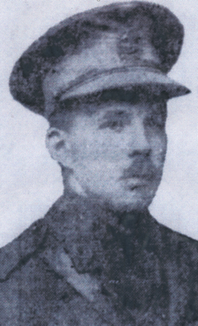

-1-MasterItem.svg)
Stories of Westminster United Church & its People / Page
66
It is evident during David Christie’s ministry that the congregation not only peaked in numbers of
membership but also in intensity of active participation. Our beginnings, our
formative years as a
congregation were complete. An outstanding Gothic style building, a statement of
our faith was a
cornerstone of a newly minted Wolsely community. Our worship services were
drawing people not
only from the surrounding area but from a wide rage of Winnipeg communities.
Our place, nationally, was evident in the leadership we had given in the
formation
of The United Church of Canada.
The Christies eventually retired to British Columbia. David died in Saanich in
February, 1943.
Andrew Fleming Christie
Andrew Fleming Christie was born in North Shields in England 15 December 1893.
In Winnipeg he was a clerk/secretary with the CPR, and in 1915 joined the 100th
Winnipeg Grenadiers as a Lieutenant. In 1917 transferred to 27th City of
Winnipeg
Battalion. In 1917 he was wounded at Lens, France, and was on medical leave till
retuning to duty in December. On 18 August 1918, Christie wrote a long letter to
his
parents describing his experiences at the front. He signs off saying “Well, I have
written too much already, as I may possibly have another show to write about
before long.”
Fleming Christie was killed in action 26 August 1918. Machine gun bullet in
chest (place of death
described as “Attack from Neuville Vitasse to Wancourt”). He was commander of a company at the
time. His battalion’s diary says “This officer was a universal favourite and his loss made the
Company very bitter.” He was awarded the Victory and British War medals and had recently been
recommended for the Military Cross.
He is buried in Wancourt British Cemetery, Wancourt, Pas de Calais, France,
Grave plot III A, 8. His
parents were notified of his death 5 September 1918. The Winnipeg Free Press
published the
following letter to Fleming’s parents on 10 September 1918.
Table
of Contents
Rev. DAvid christie
